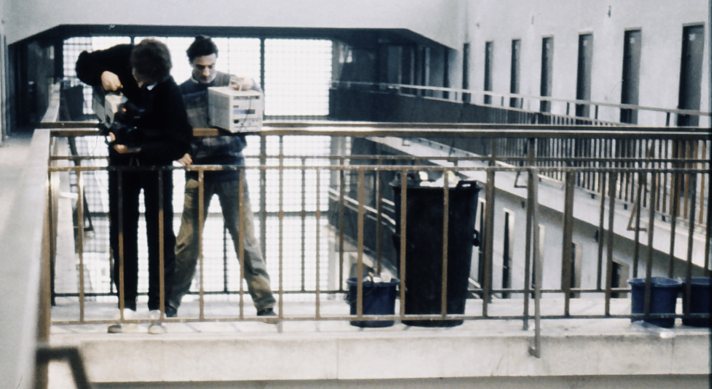

Teleprision Carabanchel
La cárcel de Carabanchel en Madrid que entre los años 1940 y 1960 encerraba a presos políticos del régimen del general Franco, en 1985 expresa la tragedia de la ilegalización de las drogas y su extensión masiva en la sociedad española.
La cárcel se ha quedado pequeña para tanto preso. Concebida para unos 800 reclusos, la media de ocupación en esos años es de 2.000 a 2.300.
TELEPRISIÓN CARABANCHEL adopta el punto de vista de los olvidados, los perdedores. Nos da un giro diferente y complementario de una época, de una sociedad que vive momentos de expansión

❮
❯